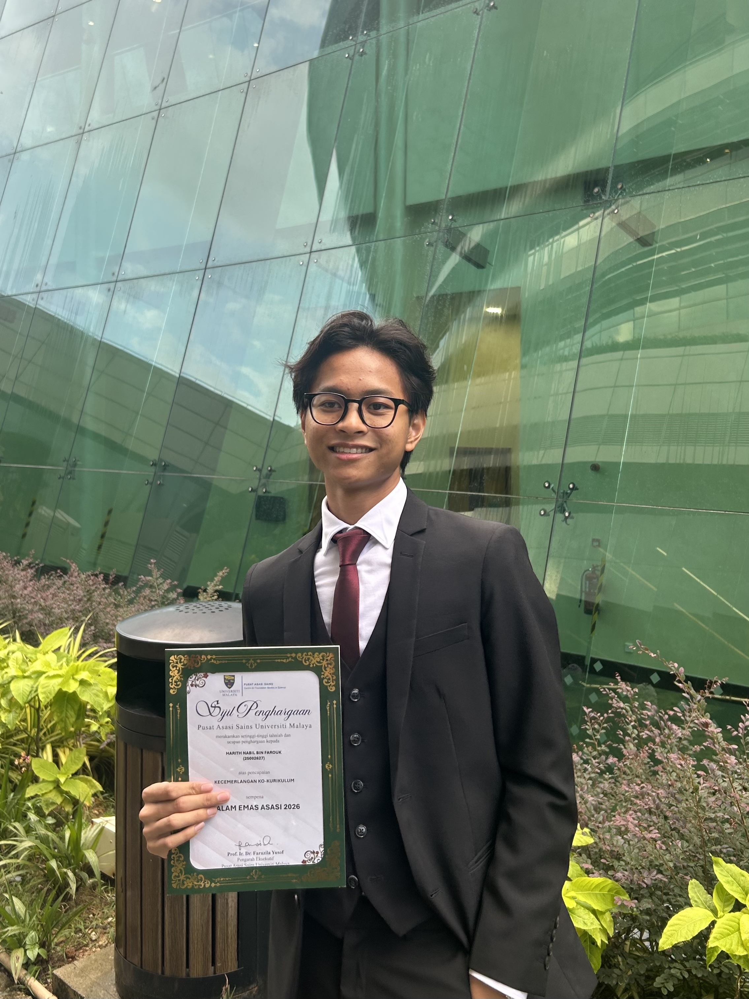
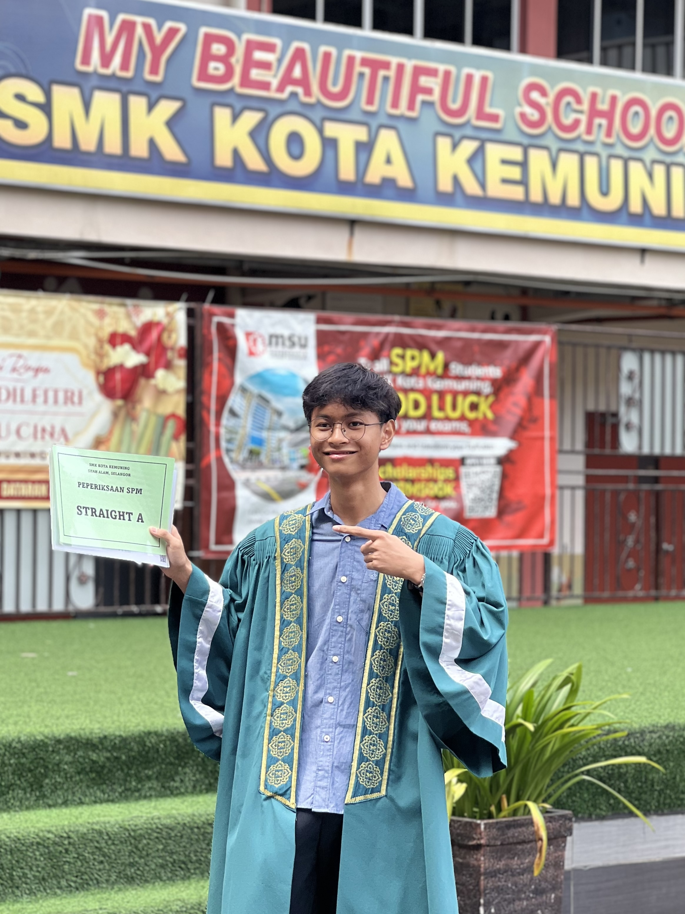
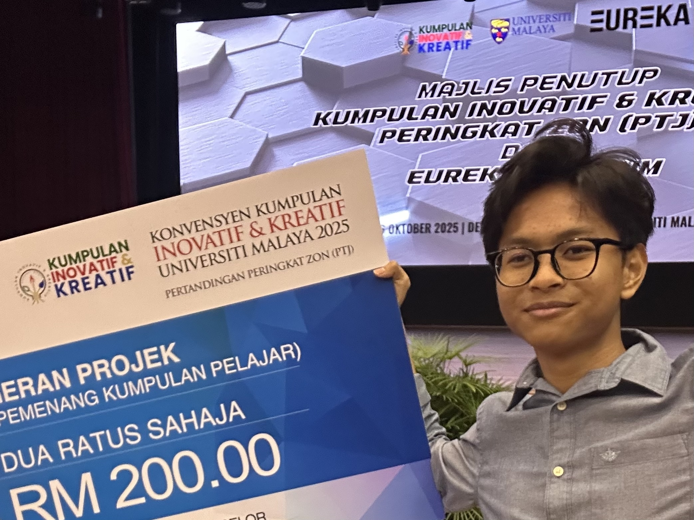

Q-Up
A digital QR queuing system. No app downloads, no accounts. Customers scan to join. Tested live at a university food court.
q-up-client.onrender.comI taught myself to code, won a Silver Medal at a national innovation competition, and built real apps that solve real problems. I'm heading to Leeds this September to study Computer Science.



I grew up in Shah Alam, Selangor, and I got into tech because I loved creating tools from scratch that actually solve real problems.
During my Foundation in Physical Science at Universiti Malaya, I applied this mindset to build real software. I created TeleSearch, an AI web app streamlining property agents' workflows, and Q-Up, a QR-based digital queuing system tested live at the UM food court, which won a Silver Medal at the national innovation competition.
My expertise lies in full-stack web development and applying AI to practical bottlenecks. Beyond achieving straight A's (6A+, 3A) in my SPM, I was awarded the Co-Curricular Excellence Award at UM for my holistic involvement beyond academics.
I hold an unconditional offer to study BSc Computer Science at the University of Leeds. My goal in going to the UK is to immerse myself in a global Fintech hub, push past my comfort zone, and return ready to lead high impact digital initiatives.
A digital QR queuing system. No app downloads, no accounts. Customers scan to join. Tested live at a university food court.
q-up-client.onrender.comAn AI-powered search engine that extracts property listings from thousands of Telegram messages into a searchable database.
github.com/harithnabilf/telesearchInterviewing users about Q-Up at the UM food court
Presenting Q-Up at the PITRAM national innovation competition